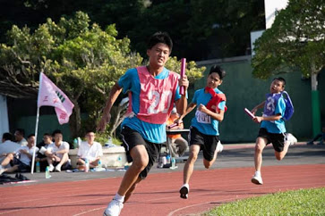
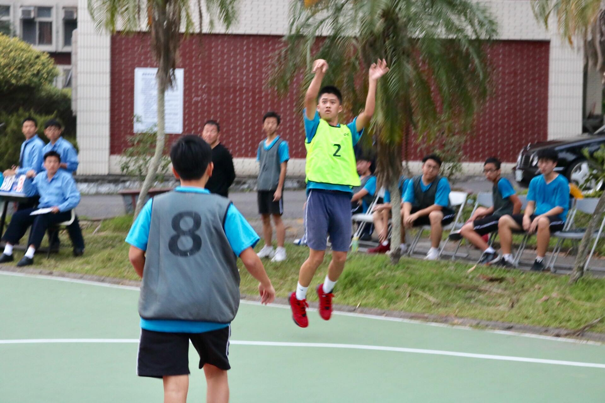
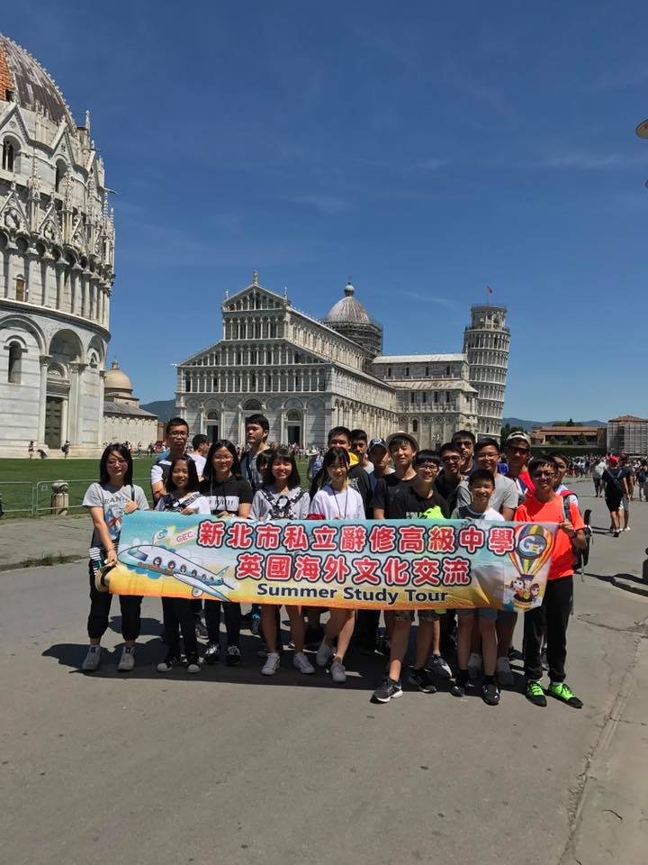

林達城個人網站

學校:國立金門大學
學號:111010533
生日:91/12/27
FB: 林達城
IG: lin_da_1227
去過國家: 香港、大陸 、義大利 、英國
求學經歷
普台國小---辭修國中---辭修高中---金門大學
幹部經歷
學生會活動組組長
畢聯會活動組組長
籃球社社長
宿舍樓長
副班長
康樂股長
得獎經歷
2019 powertech 青少年科技創作競賽全國賽 佳作
107學年校內智慧鐵人第二名
108學年校內智慧鐵人第一名
107學年校慶運動會男子組1000M接力 第二名
107學年校慶運動會男子組200M 第五名
109學年校慶運動會男子組200M 第四名
研習經歷
107學年度創意科學競賽「機械手臂」設計與製作研習時數6小時
109學年度創意科學競賽「機械手臂」設計與製作研習時數6小時
資安鑑識課程 「元宇宙時代:資安時代發行虛擬貨幣與NFT」 研習時數6小時
Hobbies

自傳
我是林達城，出生於台北，成長在單親家庭之中，父親為培養我並且教導我正確的價值觀與是非觀，並提供我良好的學習環境。父親
從事室內裝潢工作，在工作之餘，也擔任義消、搜救協會隊員及創立行善會，當父親與客戶洽談工作及行善會需要志工時，皆帶我在身旁
學習並教導，也因此造就了我的個性獨立、成熟、穩重、負責及樂觀
開朗。
遊學經歷
國三暑假我參加了為期一個月的英國義大利遊學團在Willingdon Community
School 白天跟英國的學生一起上課，晚上住在當地的寄宿家庭，我看到了英國與台灣的教育方式、生活習慣、生活態度與飲食
有所不同。
